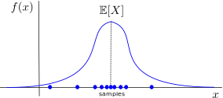
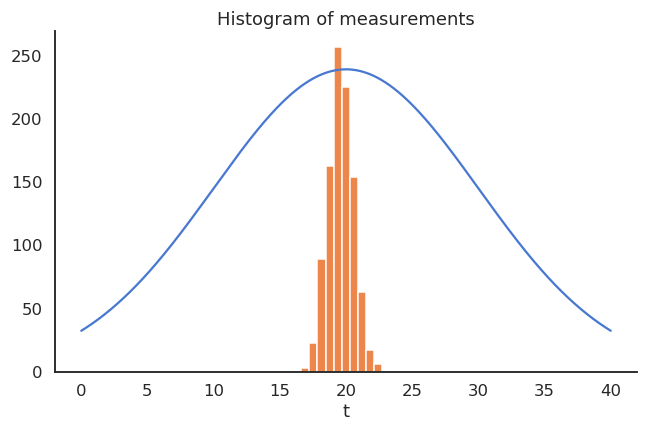
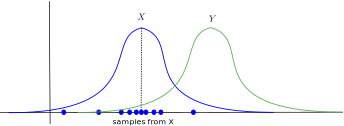

2. Math basics¶
This chapter is not part of the course itself (there will not be questions at the exam on basic mathematics) but serves as a reminder of the important mathematical notions that are needed to understand this course. Students who have studied mathematics as a major can safely skip this part, as there is nothing fancy (although the section on information theory could be worth a read).
It is not supposed to replace any course in mathematics (we won’t show any proof and will skip what we do not need) but rather to provide a high-level understanding of the most important concepts and set the notations. Nothing should be really new to you, but it may be useful to have everything summarized at the same place.
References: Part I of Goodfellow et al. (2016) [GBC16]. Any mathematics textbook can be used in addition.
2.1. Linear algebra¶
Several mathematical objects are manipulated in linear algebra:
Scalars \(x\) are 0-dimensional values (single numbers, so to speak). They can either take real values (\(x \in \Re\), e.g. \(x = 1.4573\), floats in CS) or natural values (\(x \in \mathbb{N}\), e.g. \(x = 3\), integers in CS).
Vectors \(\mathbf{x}\) are 1-dimensional arrays of length \(d\). The bold notation \(\mathbf{x}\) will be used in this course, but you may also be accustomed to the arrow notation \(\overrightarrow{x}\) used on the blackboard. When using real numbers, the vector space with \(d\) dimensions is noted \(\Re^d\), so we can note \(\mathbf{x} \in \Re^d\). Vectors are typically represented vertically to outline their \(d\) elements \(x_1, x_2, \ldots, x_d\):
Matrices \(A\) are 2-dimensional arrays of size (or shape) \(m \times n\) (\(m\) rows, \(n\) columns, \(A \in \Re^{m \times n}\)). They are represented by a capital letter to distinguish them from scalars. The element \(a_{ij}\) of a matrix \(A\) is the element on the \(i\)-th row and \(j\)-th column.
Tensors \(\mathcal{A}\) are arrays with more than two dimensions. We will not really do math on these objects, but they are useful internally (hence the name of the
tensorflowlibrary).
2.1.1. Vectors¶
A vector can be thought of as the coordinates of a point in an Euclidian space (such the 2D space), relative to the origin. A vector space relies on two fundamental operations, which are that:
Vectors can be added:
Vectors can be multiplied by a scalar:
{kind=link}
Fig. 2.1 Vector spaces allow additions of vectors. Source: https://mathinsight.org/image/vector_2d_add¶
These two operations generate of lot of nice properties (see https://en.wikipedia.org/wiki/Vector_space for a full list), including:
associativity: \(\mathbf{x} + (\mathbf{y} + \mathbf{z}) = (\mathbf{x} + \mathbf{y}) + \mathbf{z}\)
commutativity: \(\mathbf{x} + \mathbf{y} = \mathbf{y} + \mathbf{x}\)
the existence of a zero vector \(\mathbf{x} + \mathbf{0} = \mathbf{x}\)
inversion: \(\mathbf{x} + (-\mathbf{x}) = \mathbf{0}\)
distributivity: \(a \, (\mathbf{x} + \mathbf{y}) = a \, \mathbf{x} + a \, \mathbf{y}\)
Vectors have a norm (or length) \(||\mathbf{x}||\). The most intuive one (if you know the Pythagoras theorem) is the Euclidian norm or \(L^2\)-norm, which sums the square of each element:
Other norms exist, distinguished by the subscript. The \(L^1\)-norm (also called Taxicab or Manhattan norm) sums the absolute value of each element:
The p-norm generalizes the Euclidian norm to other powers \(p\):
The infinity norm (or maximum norm) \(L^\infty\) returns the maximum element of the vector:
One important operation for vectors is the dot product (also called scalar product or inner product) between two vectors:
The dot product basically sums one by one the product of the elements of each vector. The angular brackets are sometimes omitted (\(\mathbf{x} \cdot \mathbf{y}\)) but we will use them in this course for clarity.
One can notice immediately that the dot product is symmetric:
and linear:
The dot product is an indirect measurement of the angle \(\theta\) between two vectors:
{kind=link}
Fig. 2.2 The dot product between two vectors is proportional to the cosine of the angle between the two vectors. Source: https://en.wikipedia.org/wiki/Dot_product¶
If you normalize the two vectors by dividing them by their norm (which is a scalar), we indeed have the cosine of the angle between them: The higher the normalized dot product, the more the two vectors point towards the same direction (cosine distance between two vectors).
2.1.2. Matrices¶
Matrices are derived from vectors, so most of the previous properties will be true. Let’s consider this 4x3 matrix:
Each column of the matrix is a vector with 4 elements:
A \(m \times n\) matrix is therefore a collection of \(n\) vectors of size \(m\) put side by side column-wise:
So all properties of the vector spaces (associativity, commutativity, distributivity) also apply to matrices, as additions and multiplications with a scalar are defined.
Note
Beware, you can only add matrices of the same dimensions \(m\times n\). You cannot add a \(2\times 3\) matrix to a \(5 \times 4\) one.
The transpose \(A^T\) of a \(m \times n\) matrix \(A\) is a \(n \times m\) matrix, where the row and column indices are swapped:
This is also true for vectors, which become horizontal after transposition:
A very important operation is the matrix multiplication. If \(A\) is a \(m\times n\) matrix and \(B\) a \(n \times p\) matrix:
we can multiply them to obtain a \(m \times p\) matrix:
where each element \(c_{ij}\) is the dot product of the \(i\)th row of \(A\) and \(j\)th column of \(B\):
Note
\(n\), the number of columns of \(A\) and rows of \(B\), must be the same!

Fig. 2.3 The element \(c_{ij}\) of \(C = A \times B\) is the dot product between the \(i\)th row of \(A\) and the \(j\)th column of \(B\). Source: https://chem.libretexts.org/Bookshelves/Physical_and_Theoretical_Chemistry_Textbook_Maps/Book%3A_Mathematical_Methods_in_Chemistry_(Levitus)/15%3A_Matrices/15.03%3A_Matrix_Multiplication CC BY-NC-SA; Marcia Levitus¶
Thinking of vectors as \(n \times 1\) matrices, we can multiply a matrix \(m \times n\) with a vector:
The result \(\mathbf{y}\) is a vector of size \(m\). In that sense, a matrix \(A\) can transform a vector of size \(n\) to a vector of size \(m\): \(A\) represents a projection from \(\Re^n\) to \(\Re^m\).
{kind=link}
Fig. 2.4 A \(2 \times 3\) projection matrix allows to project any 3D vector onto a 2D plane. This is for example what happens inside a camera. Source: https://en.wikipedia.org/wiki/Homogeneous_coordinate¶
Note that the dot product between two vectors of size \(n\) is the matrix multiplication between the transpose of the first vector and the second one:
Square matrices of size \(n \times n\) can be inverted. The inverse \(A^{-1}\) of a matrix \(A\) is defined by:
where \(I\) is the identity matrix (a matrix with ones on the diagonal and 0 otherwise). Not all matrices have an inverse (those who don’t are called singular or degenerate). There are plenty of conditions for a matrix to be invertible (for example its determinant is non-zero, see https://en.wikipedia.org/wiki/Invertible_matrix), but they will not matter in this course. Non-square matrices are generally not invertible, but see the pseudoinverse (https://en.wikipedia.org/wiki/Moore%E2%80%93Penrose_inverse).
Matrix inversion allows to solve linear systems of equations. Given the problem:
which is equivalent to:
we can multiply both sides to the left with \(A^{-1}\) (if it exists) and obtain:
2.2. Calculus¶
2.2.1. Univariate functions¶
2.2.2. Multivariate functions¶
2.2.3. Derivatives, gradient¶
Chain rule
2.3. Probability theory¶
2.3.1. Discrete probability distributions¶
Let’s note \(X\) a discrete random variable with \(n\) realizations \(x_1, \ldots, x_n\). The probability that \(X\) takes the value \(x_i\) is defined by the relative frequency of occurrence, i.e. the proportion of samples having the value \(x_i\), when the total number \(N\) of samples tends to infinity:
The set of probabilities \(\{P(X = x_i)\}_{i=1}^n\) define the probability distribution for the random variable (or probability mass function, pmf). By definition, we have \(0 \leq P(X = x_i) \leq 1\) and the probabilities have to respect:
An important metric for a random variable is its mathematical expectation or expected value, i.e. its “mean” realization weighted by the probabilities:
The expectation does not even need to be a valid realization:
We can also compute the mathematical expectation of functions of a random variable:
The variance of a random variable is the squared deviation around the mean:
Variance of a coin:
Variance of a dice:
2.3.2. Continuous probability distributions¶
Continuous random variables can take an infinity of continuous values, e.g. \(\Re\) or some subset. The closed set of values they can take is called the support \(\mathcal{D}_X\) of the probability distribution. The probability distribution is described by a probability density function (pdf) \(f(x)\).
The pdf of a distribution must be positive (\(f(x) \geq 0 \, \forall x \in \mathcal{D}_X\)) and its integral must be equal to 1:
The pdf does not give the probability of taking a particular value \(x\) (it is 0), but allows to get the probability that a value lies in a specific interval:
One can however think of the pdf as the likelihood that a value \(x\) comes from that distribution.
For continuous distributions, the mathematical expectation is now defined by an integral instead of a sum:
the variance also:
or a function of the random variable:
Note that the expectation operator is linear:
but not the variance, even when the distributions are independent:
2.3.3. Standard distributions¶
Probability distributions can in principle have any form: \(f(x)\) is unknown. However, specific parameterized distributions can be very useful: their pmf/pdf is fully determined by a couple of parameters.
The Bernouilli distribution is a binary (discrete, 0 or 1) distribution with a parameter \(p\) specifying the probability to obtain the outcome 1 (e.g. a coin):
The Multinouilli or categorical distribution is a discrete distribution with \(k\) realizations (e.g. a dice). Each realization \(x_i\) is associated with a parameter \(p_i >0\) representing its probability. We have \(\sum_i p_i = 1\).
The uniform distribution has an equal and constant probability of returning values between \(a\) and \(b\), never outside this range. It is parameterized by the start of the range \(a\) and the end of the range \(b\). Its support is \([a, b]\). The pdf of the uniform distribution \(\mathcal{U}(a, b)\) is defined on \([a, b]\) as:
The normal distribution is the most frequently encountered continuous distribution. It is parameterized by two parameters: the mean \(\mu\) and the variance \(\sigma^2\) (or standard deviation \(\sigma\)). Its support is \(\Re\). The pdf of the normal distribution \(\mathcal{N}(\mu, \sigma)\) is defined on \(\Re\) as:
The exponential distribution is the probability distribution of the time between events in a Poisson point process, i.e., a process in which events occur continuously and independently at a constant average rate. It is parameterized by one parameter: the rate \(\lambda\). Its support is \(\Re^+\) (\(x > 0\)). The pdf of the exponential distribution is defined on \(\Re^+\) as:
2.3.4. Joint and conditional probabilities¶
Let’s now suppose that we have two random variables \(X\) and \(Y\) with different probability distributions \(P(X)\) and \(P(Y)\). The joint probability \(P(X, Y)\) denotes the probability of observing the realizations \(x\) and \(y\) at the same time:
If the random variables are independent, we have:
If you know the joint probability, you can compute the marginal probability distribution of each variable:
The same is true for continuous probability distributions:
Some useful information between two random variables is the conditional probability. \(P(X=x | Y=y)\) is the conditional probability that \(X=x\), given that \(Y=y\) is observed.
\(Y=y\) is not random anymore: it is a fact (at least theoretically).
You wonder what happens to the probability distribution of \(X\) now that you know the value of \(Y\).
Conditional probabilities are linked to the joint probability by:
If \(X\) and \(Y\) are independent, we have \(P(X=x | Y=y) = P(X=x)\) (knowing \(Y\) does not change anything to the probability distribution of \(X\)). We can use the same notation for the complete probability distributions:
Example
https://www.elevise.co.uk/g-e-m-h-5-u.html
You ask 50 people whether they like cats or dogs:
18 like both cats and dogs.
21 like only dogs.
5 like only cats.
6 like none of them.
We consider loving cats and dogs as random variables (and that our sample size is big enough to use probabilities…). Among the 23 who love cats, which proportion also loves dogs?
We have \(P(\text{dog}) = \frac{18+21}{50}\) and \(P(\text{cat}) = \frac{18+5}{50}\).
The joint probability of loving both cats and dogs is \(P(\text{cat}, \text{dog}) = \frac{18}{50}\).
The conditional probability of loving dogs given one loves cats is:
2.3.5. Bayes’ rule¶
Noticing that the definition of conditional probabilities is symmetric:
we can obtain the Bayes’ rule:
It is very useful when you already know \(P(X|Y)\) and want to obtain \(P(Y|X)\) (Bayesian inference).
\(P(Y | X)\) is called the posterior probability.
\(P(X | Y)\) is called the likelihood.
\(P(Y)\) is called the prior probability (belief).
\(P(X)\) is called the model evidence or marginal likelihood.
Example
Let’s consider a disease \(D\) (binary random variable) and a medical test \(T\) (also binary). The disease affects 10% of the general population:
When a patient has the disease, the test is positive 80% of the time (true positives):
When a patient does not have the disease, the test is still positive 10% of the time (false positives):
Given that the test is positive, what is the probability that the patient is ill?
Answer:
2.4. Statistics¶
2.4.1. Monte Carlo sampling¶
Random sampling or Monte Carlo sampling consists of taking \(N\) samples \(x_i\) out of the distribution \(X\) (discrete or continuous) and computing the sample average:

More samples will be obtained where \(f(x)\) is high (\(x\) is probable), so the average of the sampled data will be close to the expected value of the distribution.
Law of big numbers
As the number of identically distributed, randomly generated variables increases, their sample mean (average) approaches their theoretical mean.
MC estimates are only correct when:
the samples are i.i.d (independent and identically distributed):
independent: the samples must be unrelated with each other.
identically distributed: the samples must come from the same distribution \(X\).
the number of samples is large enough. Usually \(N > 30\) for simple distributions.
One can estimate any function of the random variable with random sampling:
Example of Monte Carlo sampling to estimate \(\pi/4\):


Credit https://towardsdatascience.com/an-overview-of-monte-carlo-methods-675384eb1694
2.4.2. Central limit theorem¶
Suppose we have an unknown distribution \(X\) with expected value \(\mu = \mathbb{E}[X]\) and variance \(\sigma^2\). We can take randomly \(N\) samples from \(X\) to compute the sample average:
The Central Limit Theorem (CLT) states that:
The distribution of sample averages is normally distributed with mean \(\mu\) and variance \(\frac{\sigma^2}{N}\).
If we perform the sampling multiple times, even with few samples, the average of the sampling averages will be very close to the expected value. The more samples we get, the smaller the variance of the estimates. Although the distribution \(X\) can be anything, the sampling averages are normally distributed.

2.4.3. Estimators¶
CLT shows that the sampling average is an unbiased estimator of the expected value of a distribution:
An estimator is a random variable used to measure parameters of a distribution (e.g. its expectation). The problem is that estimators can generally be biased.
Take the example of a thermometer \(M\) measuring the temperature \(T\). \(T\) is a random variable (normally distributed with \(\mu=20\) and \(\sigma=10\)) and the measurements \(M\) relate to the temperature with the relation:
The thermometer is not perfect, but do random measurements allow us to estimate the expected value of the temperature?
We could repeatedly take 100 random samples of the thermometer and see how the distribution of sample averages look like:

But, as the expectation is linear, we actually have:
The thermometer is a biased estimator of the temperature.
Let’s note \(\theta\) a parameter of a probability distribution \(X\) that we want to estimate (it does not have to be its mean). An estimator \(\hat{\theta}\) is a random variable mapping the sample space of \(X\) to a set of sample estimates.
The bias of an estimator is the mean error made by the estimator:
The variance of an estimator is the deviation of the samples around the expected value:
Ideally, we would like estimators with:
low bias: the estimations are correct on average (= equal to the true parameter).
low variance: we do not need many estimates to get a correct estimate (CLT: \(\frac{\sigma}{\sqrt{N}}\))

Unfortunately, the perfect estimator does not exist in practice. One usually talks of a bias/variance trade-off: if you have a small bias, you will have a high variance, or vice versa. In machine learning, bias corresponds to underfitting, variance to overfitting.
2.5. Information theory¶
https://towardsdatascience.com/entropy-cross-entropy-and-kl-divergence-explained-b09cdae917a
2.5.1. Entropy¶
Information theory (a field founded by Claude Shannon) asks how much information is contained in a probability distribution. Information is related to surprise or uncertainty: are the outcomes of a random variable surprising?
Almost certain outcomes (\(P \sim 1\)) are not surprising because they happen all the time.
Almost impossible outcomes (\(P \sim 0\)) are very surprising because they are very rare.
A useful measurement of how surprising is an outcome \(x\) is the self-information:
Depending on which log is used, self-information has different units, but it is just a rescaling, the base never matters:
\(\log_2\): bits or shannons.
\(\log_e = \ln\): nats.
The entropy (or Shannon entropy) of a probability distribution is the expected value of the self-information of its outcomes:
It measures the uncertainty, randomness or information content of the random variable.
In the discrete case:
In the continuous case:
The entropy of a Bernouilli variable is maximal when both outcomes are equiprobable. If a variable is deterministic, its entropy is minimal and equal to zero.
The joint entropy of two random variables \(X\) and \(Y\) is defined by:
The conditional entropy of two random variables \(X\) and \(Y\) is defined by:
If the variables are independent, we have:
Both are related by:
The equivalent of Bayes’ rule is:
2.5.2. Mutual Information, cross-entropy and Kullback-Leibler divergence¶
The most important information measurement between two variables is the mutual information MI (or information gain):
It measures how much information the variable \(X\) holds on \(Y\):
If the two variables are independent, the MI is 0 : \(X\) is as random, whether you know \(Y\) or not.
If the two variables are dependent, knowing \(Y\) gives you information on \(X\), which becomes less random, i.e. less uncertain / surprising.
If you can fully predict \(X\) when you know \(Y\), it becomes deterministic (\(H(X|Y)=0\)) so the mutual information is maximal (\(I(X, Y) = H(X)\)).
The cross-entropy between two distributions \(X\) and \(Y\) is defined as:
Note
Beware that the notation \(H(X, Y)\) is the same as the joint entropy, but it is a different concept!
The cross-entropy measures the negative log-likelihood that a sample \(x\) taken from the distribution \(X\) could also come from the distribution \(Y\). More exactly, it measures how many bits of information one would need to distinguish the two distributions \(X\) and \(Y\).

If the two distributions are the same almost anywhere, one cannot distinguish samples from the two distributions:
The cross-entropy is the same as the entropy of \(X\).
If the two distributions are completely different, one can tell whether a sample \(Z\) comes from \(X\) or \(Y\):
The cross-entropy is higher than the entropy of \(X\).
In practice, the Kullback-Leibler divergence \(\text{KL}(X ||Y)\) is a better measurement of the similarity (statistical distance) between two probability distributions:
It is linked to the cross-entropy by:
If the two distributions are the same almost anywhere:
The KL divergence is zero.
If the two distributions are different:
The KL divergence is positive.
Minimizing the KL between two distributions is the same as making the two distributions “equal”. The KL is not a metric, as it is not symmetric.